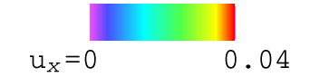
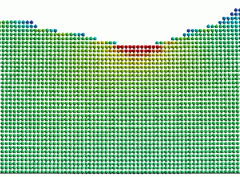

Pit formation in strained heteroepitaxy
The following movies show results from two-dimensional kinetic Monte Carlo simulations of growth of Ge0.5Si0.5 on Si substrate. There is a 2% lattice misfit. The growth temperature is 450oC and the deposition rate is 2 ML/s. The system simulated is 2048 atoms wide.
The first movie shows the deposition of the first 80 MLs which takes 40s. Only the film is shown. We can observe the formation of two pits. Shallow islands also appear next to them. The color code represents the compressive strain ux along the lateral direction. Click on the figure below to download the movie.

The second movie shows further details during the initial development of the pit on the left. Only the region within columns 440 to 500 is shown. Individual atoms are visible. The movie starts when nominal coverage is 47.5MLs. Growth during a period of 0.1s is shown. At this level of detail, we observe large temporal fluctuations in the size and depth of the emerging pit during its development. The net increase in the pit size during this short period is insignificant. The movie is compiled from snapshots taken after every 10-4s. Thus, not all atomic hopping events are shown. Despite the numerous hopping events, on average only about 7 new atoms are deposited into the displayed region. The color code used is same as the previous movie.

Both movies can be played using microsoft windows media player version 9 on a window XP system. A full description of the results can be found in J.L. Gray, R. Hull, C.H. Lam, P. Sutter, J.L. Means, J.A. Floro, "Beyond the heteroeptaxial quantum dot: self-assembling complex nanostructures controlled by strain and growth kinetics", submitted to Phys. Rev. B.